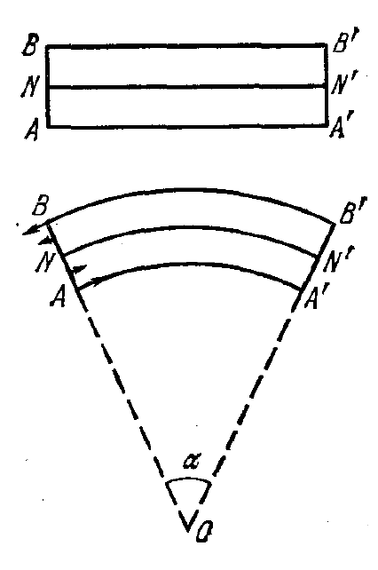
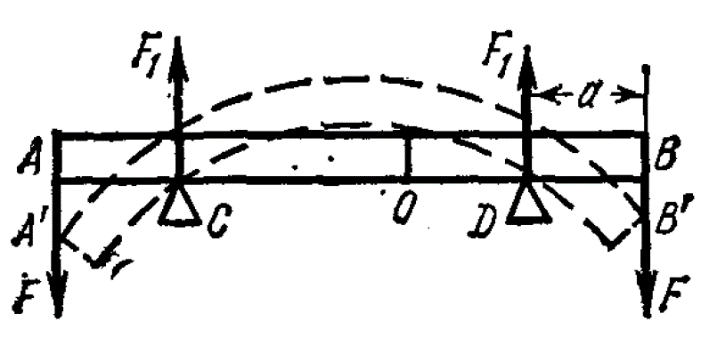
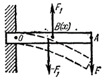

Y17 (2017) — English translation
With various types of deformations, stresses arise in a solid. Let, during deformation, some point of the body, which had the coordinate $x$, shift by the amount $s$. If the displacement were the same for all points of the body, we would simply get a parallel transfer of the rigid body. Let us therefore assume that at the neighboring point with coordinate $x+ dx$ the displacement is slightly different from $s$ and is equal to $s+ds$. The deformation at a point, by definition, is equal to: \[\varepsilon = \frac{ds}{dx}.\]Forces that produce tensile (compressive) deformations are called tensile (compressive) forces. The stresses corresponding to these types of forces are defined as the force per unit of the corresponding area: \[\sigma = \frac{F}{S}\]The concept of stress has the advantage over the concept of force that it can be established locally at each point. It is defined as the local vector of force acting per unit area of some imaginary plane inside the body. The deformations and stresses of a solid body are related by the relation: \[\sigma = E\varepsilon,\]where the value $E$ is called Young’s modulus. Let's consider the deformations and stresses in the bar. Let a homogeneous and isotropic body have the shape of a parallelepiped. Forces $F_x$, $F_y$ and $F_z$ are applied perpendicular to its opposite faces. Let us denote the corresponding stresses as $\sigma_x$, $\sigma_y$ and $\sigma_z$. Let us determine the deformations that arise under the influence of these forces. Assuming the deformations to be small, we will use the principle of superposition of small deformations. Let's direct the coordinate axes parallel to the edges of the parallelepiped. Let $l_x$, $l_y$ and $l_z$ be the lengths of these edges. If only the force $F_x$ acted, then the edge $l_x$ would receive an increment $\Delta_1 l_x$, determined by the relation \[\frac{\Delta_1 l_x}{l_x} =\frac{\sigma_x}{E}.\]If only the force $F_y$ acted, then the dimensions of the block, perpendicular to the $y$ axis would shrink. In particular, the edge $l_x$ would receive a negative increment $\Delta_2 l_x$, which can be calculated by the formula \[\frac{\Delta_2 l_x}{l_x} = - \frac{\mu \sigma_y}{E},\]where $\mu$ is called Poisson's ratio. Young's modulus and Poisson's ratio fully characterize the elastic properties of an isotropic material. All other elastic constants can be expressed in terms of $E$ and $\mu$. The relative increment of the rib $l_x$ under the action of only one force $F_z$ would be equal to \[\frac{\Delta_3 l_x}{l_x} =-\frac{\mu \sigma_z}{E}.\]If all forces act simultaneously, then according to the principle of superposition of small deformations, the resulting elongation of the rib $l_x$ will be equal \[\Delta l_x=\Delta_1 l_x+\Delta_2 l_x+\Delta_3 l_x.\] The elongations of the edges $l_y$ and $l_z$ are calculated similarly. As a result, we find \[ \begin{cases} \varepsilon_x = \dfrac{\sigma_x}{E} - \dfrac{\mu }{E} (\sigma_y + \sigma_z)\\[2pt] \varepsilon_y = \dfrac{\sigma_y}{E} - \dfrac{\mu }{E} (\sigma_x + \sigma_z)\\[2pt] \varepsilon_z = \dfrac{\sigma_z}{E} - \dfrac{\mu }{E} (\sigma_x + \sigma_y) \end{cases} \] These equations are called generalized Hooke's law. In this part of the problem, you are asked to consider special cases of deformations of elastic bodies and find the elasticity coefficients in such cases.
In this part of the problem, it is required to determine the moment that occurs in a homogeneous beam of arbitrary cross-section during bending. The cross-section of the beam is the same throughout the entire length of the beam. Let the beam have a rectilinear shape before deformation. Having drawn sections $AB$ and $A'B'$, normal to the axis of the beam, we mentally cut out from it an infinitesimal element $AA'B'B$ (see figure), the length of which we denote $l_0$. In view of the infinite smallness of the selected element, we will assume that as a result of bending, straight lines $AA'$, $NN'$, $BB'$ and all straight lines parallel to them will turn into circles with centers lying on the axis $O$, perpendicular to the plane of the drawing. The outer fibers lying above the line $NN'$ lengthen when bending, the fibers lying below the line $NN'$ are shortened. The length of line $NN'$ remains unchanged. This line is called the neutral line. The section of the (undeformed) beam passing through it with a plane perpendicular to the plane of the drawing is called a neutral section. Let $R$ be the radius of curvature of the neutral line $NN'$. Then $l_0=R \alpha$, where $\alpha$ is the central angle subtended by the arc $NN'$.
In this part of the problem, it is required to determine the moment that occurs in a homogeneous beam of arbitrary cross-section during bending. The cross-section of the beam is the same throughout the entire length of the beam. Let the beam have a rectilinear shape before deformation. Having drawn sections $AB$ and $A'B'$, normal to the axis of the beam, we mentally cut out from it an infinitesimal element $AA'B'B$ (see figure), the length of which we denote $l_0$. In view of the infinite smallness of the selected element, we will assume that as a result of bending, straight lines $AA'$, $NN'$, $BB'$ and all straight lines parallel to them will turn into circles with centers lying on the axis $O$, perpendicular to the plane of the drawing. The outer fibers lying above the line $NN'$ lengthen when bending, the fibers lying below the line $NN'$ are shortened. The length of line $NN'$ remains unchanged. This line is called the neutral line. The section of the (undeformed) beam passing through it with a plane perpendicular to the plane of the drawing is called a neutral section. Let $R$ be the radius of curvature of the neutral line $NN'$. Then $l_0=R \alpha$, where $\alpha$ is the central angle subtended by the arc $NN'$.

Pay attention to the integral obtained in the previous paragraph. Let us introduce the notation $I=\int \xi^2 dS$. The quantity $I$ is called the moment of inertia of the cross section of the beam by analogy with the corresponding quantity introduced when considering the rotation of a body around a fixed axis. However, in contrast to the latter quantity, which has the dimension of mass multiplied by the square of the length, $I$ is a purely geometric quantity with the dimension of the fourth power of length. Determine $I$ for different beam cross-section shapes:
Consider a homogeneous rod with Young's modulus $E$ with a circular section of radius $r$ and length $l_0$, which lies on two symmetrically located supports $C$ and $D$. Identically directed forces $F$ are applied to the ends of the rod $A$ and $B$. Find the radius of curvature $R(x)$ of the curved beam at each point along its length (coordinate $x$ is measured along the uncurved rod from its center). Express your answer in terms of $E$, $F$, $a$, $r$, $l_0$. Gravity should be neglected compared to $F$. Consider also that $R \gg l_0$.

Consider a beam with a rectangular cross-section with a width $w$ and a height $h$ and a length $l_0$, rigidly fixed to the wall at one end (perpendicular to the wall at the attachment point). A concentrated force $F$ acts on the other end of the beam. Let $x$ be the coordinate along the length of the unbent beam, measured from the wall, $y(x)$ be the height deviation from the unbent position of the beam. Define the function $y(x)$. Express your answer in terms of $E$, $F$, $l_0$, $w$, $h$. Gravity should be neglected compared to $F$. Consider also that for any $x$ the following holds: $y(x) \ll l_0$. When solving, you may need a formula for the radius of curvature of the line given by the equation $y(x)$: $R=\frac{\left(1+y'(x)^2\right)^{3/2}}{y'' (x)}$.

Source: https://pho.rs/p/3961